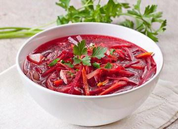

 Борщи – это исконно русские блюда, для приготовления которых необходимо отварить мясо. Предварительно оно тщательно промывается и заливается холодной водой, а после на среднем огне доводится до кипения, по мере появления снимается пена, а после бульон варится еще на протяжении 1,5 часа. Пастернак и свекла нарезаются тонкой соломкой, лук - полукольцами, морковь и помидоры натираются, а капуста тонко шинкуется. В конце приготовления отвар обязательно солится. Затем в него отправляется капуста, масса доводится до кипения, и картошка закладывается целиком. Ждем, пока все дойдет полуготовности. На маленькой сковороде немного обжаривается лук, пастернак и морковка, затем все заливается томатами и тщательно тушится.